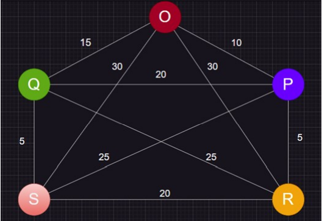

The Held–Karp algorithm, also called Bellman–Held–Karp
algorithm, is a dynamic programming algorithm proposed in 1962
independently by Bellman and by Held and Karp to solve the traveling salesman problem (TSP), in which the input is a distance matrix
between a set of cities, and the goal is to find a minimum-length
tour that visits each city exactly once before returning to the starting point. It finds the exact solution to this problem, and to several
related problems including the Hamiltonian cycle problem, in exponential time.
Dynamic programming is both a mathematical optimization method
and a computer programming method. The method was developed
by Richard Bellman in the 1950s.
A School bus starting from School needs to visit all the specified bus stops, where the distance between all the stops are known and each bus stop needs to be visited once. What is the shortest possible route that the bus visit each stop exactly once and returns back to school?
The bus in this case has to visit each and every bus stop (node) exactly so once this Implies the bus is following the Hamiltonian path. But this problem is more complex than the Hamiltonian cycle as shortest path is also to be found. Given below graph depicts the five bus stops which the school bus has to travel. Bus has to start from the bus stop O(school), where many possible routes are possible to travel.
Scheduling a single bus run to pick up youngsters who are waiting is evidently a TSP. Many businesses focus on developing software for school bus routing, giving school districts a rapid way to improve their pickup times using this.
The TSP plays an important role by providing a tool for building sequences from experimental data on the proximity of individual pairs of markers.
Printed circuit boards can be found in many common electronic devices. While scan chains arise in chip design, a classic application of the TSP arises in the production of the basic boards.
The focal point of the laser beam is used to create fractures at specified three-dimensional points in the crystal, creating tiny points that are visible in the clear material. The TSP is again to route the laser through the points to minimize the production time.
The process of rotating equipment into position for viewing is called slewing. For large-scale telescopes, slewing is a time-consuming procedure. In this setting, a TSP tour that minimizes the total slewing time for a set of observations can easily be implemented.
Modules are located on a computer board and a given subset of pins has to be connected.Hence we have the problem of finding a shortest Hamiltonian path with unspecified starting and terminating points.